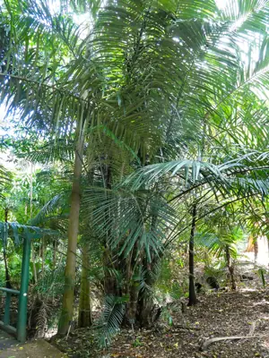

pranet · 出典付きの植物図鑑
southern arenga ☠
Arenga australasica (H.Wendl. & Drude) S.T.Blake ex H.E.Moore · Arecaceae

Arenga australasica, commonly known as arenga palm or southern arenga, is a plant in the palm family Arecaceae found only in the Northern Territory and Queensland, Australia. It has a clustering habit and it may reach 20 m (66 ft) in height with a trunk diameter of 30 cm (12 in). Fronds can be up to 4 m (13 ft) long with numerous leaflets, dark green above and grey underneath. Inflorescences are produced from the bases of the fronds and can reach a length of 2 m, carrying numerous pendant panicles of flowers. The flowers are in clusters of 3 with one pistillate and two staminate flowers. The red or purple fruit are almost spherical in shape, about 28 mm (1.1 in) diameter and contain two or three seeds.
出典: Wikipedia (en): Arenga australasica · CC BY-SA 4.0
異名: Arenga gracilicaulis F.M.Bailey, Arenga microcarpa Becc., Didymosperma humile Lauterb. & K.Schum., Didymosperma microcarpum (Becc.) Warb. ex K.Schum. & Lauterb., Didymosperma novoguineense Warb. ex K.Schum. & Lauterb., Normanbya australasicus (H.Wendl. & Drude) Baill., Saguerus australasicus H.Wendl. & Drude
同定や利用は自己責任でお願いします。この図鑑だけを根拠に野生の植物を食べないでください。
出典
- 学名: World Flora Online Plant List 2026-06 · CC0 1.0
- 名前: Wikipedia の記事名と Wikidata · CC0 1.0（Wikidata）。記事名は事実
- 説明: Wikipedia (en): Arenga australasica · CC BY-SA 4.0
- 食用・毒性: World Checklist of Useful Plant Species (Diazgranados et al. 2020, RBG Kew) · CC BY 4.0
- 分布: World Checklist of Vascular Plants (WCVP), RBG Kew, version 2026-06-04 · CC BY 3.0
このページは pranet のデータから自動生成しています。コードは MIT、データは項目ごとのライセンス（説明）。